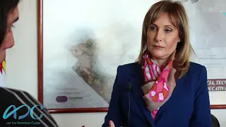

Silvina Gvirtz
Reflects on teacher training and the need to build accessible schools that recognize diversity and promote equality.
Watch interview ↗Inclusive education, human rights, and social transformation.
In-depth conversations with education policy leaders exploring inclusion, social justice, and the challenges facing the public school system.
Reflects on teacher training and the need to build accessible schools that recognize diversity and promote equality.
Watch interview ↗Analyzes historical and current challenges for an education system that respects differences and guarantees everyone’s right to learn.
Watch interview ↗Speaks about the link between education, science, and human rights, and the importance of an inclusive system that advances social justice.
Watch interview ↗
Emphasizes the State’s responsibility to guarantee the right to inclusive education and transform exclusionary school practices.
Watch interview ↗Argues for reviewing pedagogical models to build truly inclusive and participatory education systems.
Watch interview ↗Story about his journey and the experiences that turned disability into a tool for change.
Read full article ↗Interview addressing inclusive teaching from personal experience and the challenges of the education system.
Read full article ↗Chronicle of the training “Physical practices for people with disabilities” and the proposed anti-ableist approach.
Read full article ↗Conversation about activism, recognition, and educational transformation from a critical perspective.
See interview (PDF) ↗
Conversation about inclusive education, teaching experiences, and the challenges of human rights training.
Listen to interview ↗Dialogue about daily life, autonomy, family, and building collective projects with disability organizations.
Listen to interview ↗